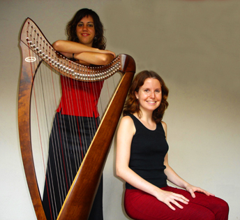

ARPA POÈTICA
Martina Escoda, selección poemas y voz.
Maria del Mar Casals, arreglos musicales y arpa.
Proponen:
El dúo Martina Escoda y M. del Mar Casals son las creadoras del espectáculo Mans Extranyes (2006) del que editaron un CD en 2009 y que han representado y aún representan los Países Catalanes. Posteriormente, crearon Poemas Nevados enmarcado en el contexto navideño.
Programa: Poemas Nevados
Os invitamos a un recital íntimo de poesía navideña y música de arpa.
Un viaje nevado a través de la calidez y melancolía de nuestros poetas
catalanes como Joan Salvat-Papasseit, Clementina Arderiu, Joan
Maragall, J. V. Foix o Joan Vinyoli, entre otros.